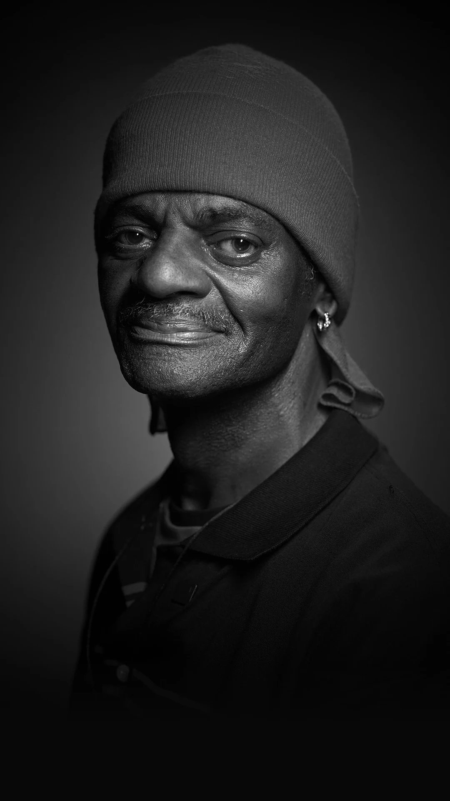

Episode01
Michael Steger
A gentle giant.
Phone test · Step 1 of 3
Swipe this row sideways with your thumb, starting on a portrait.
Michael Steger
A gentle giant.
Whitney Wiley

Ronald Coulter
“But I have memories.”
Someone’s own words float here, over the moving film.